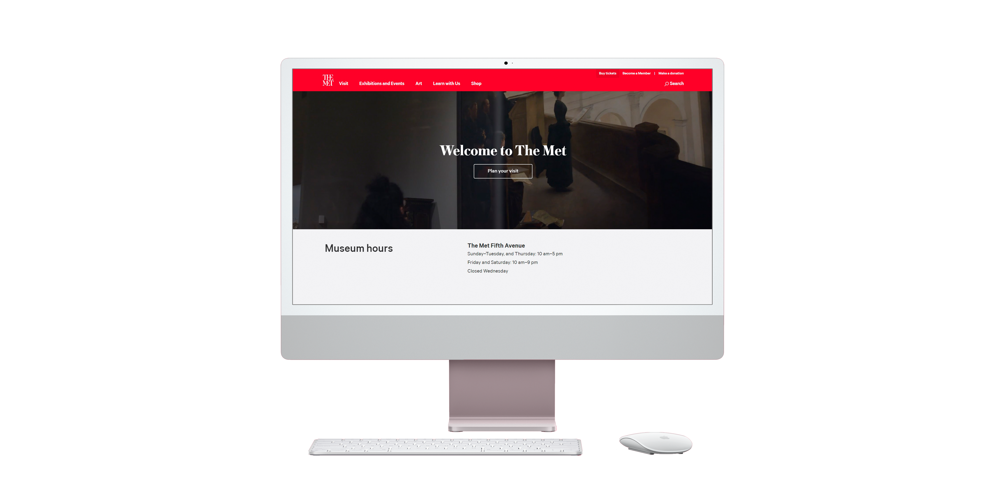
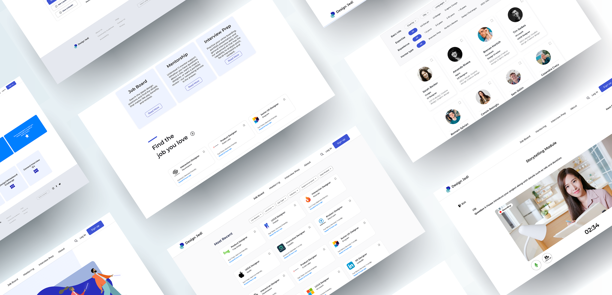
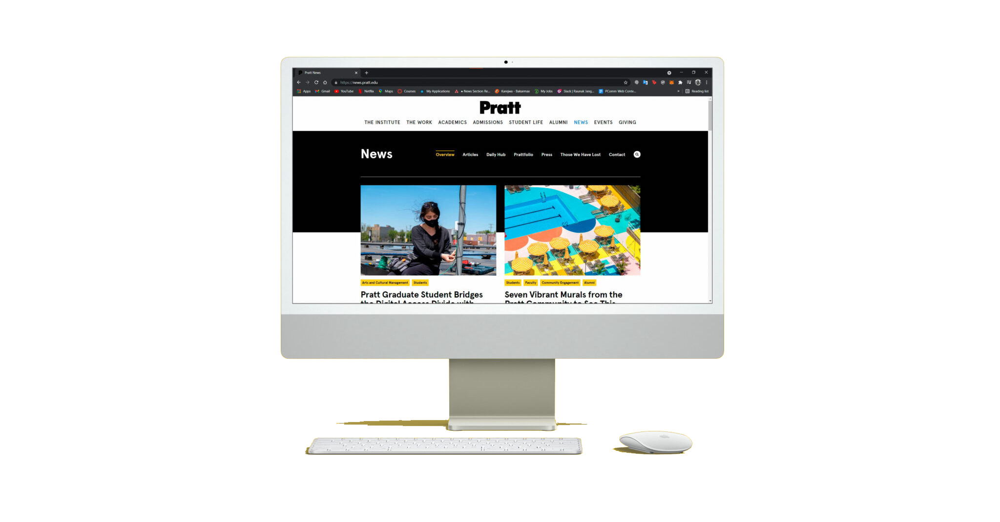
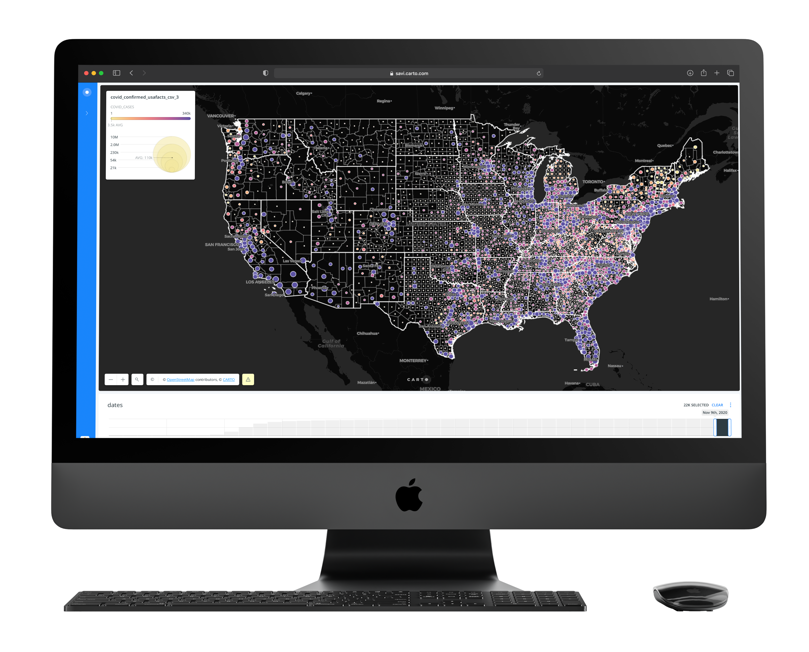

Portfolio · 2019–2025
A UX designer & researcher working at the intersection of accessibility, systems & people.
Selected Work
— 07 projects

01
The MET Eye Tracking Study
Evaluative research on the Metropolitan Museum of Art's digital experience using eye-tracking technology and comparative analysis to surface navigational pain points.

02
Design Jedi
End-to-end UX research and design project combining user interviews, journey mapping, and comparative analysis to redesign a complex user flow.

03
Pratt News Analysis
Comprehensive UX analysis of Pratt Institute's news platform — identifying audience needs, content gaps, and information architecture improvements.

04
COVID-19 Predictive Spatial Analysis
Interactive dashboard combining spatial analysis and predictive modelling to visualize COVID-19 spread patterns. Built with Carto and user-tested with public health researchers.

05
Placemaking Week
Full redesign of the Placemaking Week conference website — mobile-first approach with research, information architecture, and high-fidelity visual design.

06
Barnard Digital Collections
User testing and information architecture analysis of Barnard College's digital collections portal — surfacing friction for students and faculty researchers.

07
Skill Sharing Application
Zero-to-one mobile and web design for a peer-to-peer skill sharing platform. Full research, visual design, and prototyping from brief to hi-fi.
Skills & Craft
— What I bring
Research & Strategy
User Interviews
Usability Testing
Eye Tracking
Card Sorting
Competitive Audit
Usage Analytics
Spatial Analysis
Design & Systems
Interaction Design
Design Systems
IA + Navigation
Prototyping
Zero-to-One
Data Visualization
Responsive Design
Tools & Accessibility
Figma
Accessibility Advocacy
Front-end Development
Stakeholder Facilitation
Journey Mapping
How I Work
— Methodology
Every project follows the same four-phase loop — expanding outward to explore, then narrowing to act.
01
Discover
I start by listening — to users, stakeholders, and data — before forming any opinions about the solution.
02
Define
I synthesize findings into a clear problem statement — so the team agrees on what we're solving before how.
03
Design
I explore many directions quickly, test with real users, and iterate until the evidence supports a direction.
04
Deliver
I hand off with full specs, stay close through build, and measure outcomes to inform the next cycle.